Case Study 004 · Retrospective
Craftsmanship · Process Design
The Pastry Kitchen
Where UX design began: in buttercream.

- Discipline
- Pastry arts & wedding cake design
- Training
- Sullivan College, Baking & Pastry Arts (Wilton Method)
- Recognition
- Silver Medal, NRA/ACF Culinary Salon, Chicago 1992
- Experience
- 35+ years
Origins in Competitive Pastry Arts
In the beginning, there was the training. Sullivan College's Baking & Pastry Arts program incorporated Wilton Method instruction, and pastillage was the proving ground.
Pastillage is a sugar paste that dries completely rigid. It can be rolled, cut, and shaped into architectural forms: columns, panels, lattice, draped fabric. But once it sets, it cannot be corrected. A crack is a crack. A lean is a lean. The material enforces precision in a way no instructor can. You either planned carefully enough, or you started over.
Planning carefully enough meant cardboard first. Every component was designed on paper, cut from cardboard, and test-fitted before a single piece of pastillage was rolled out. Piping templates were drawn, refined, and practiced until the muscle memory was there. The sugar was the final draft, not the first one.

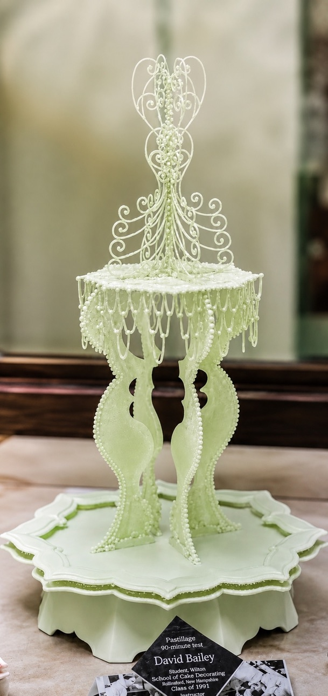

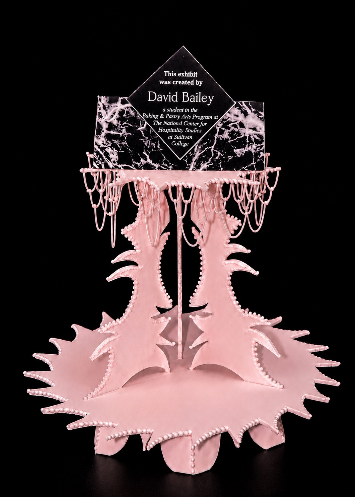
The green centerpiece was the timed test: ninety minutes to produce a finished structural showpiece from scratch. Every decision had to be made before the clock started. The pink centerpiece was built as additional practice under the same Wilton guidelines, with the same technical demands and more room to explore.
Both pieces predate the 1992 competition. They are the reason it was possible.
“Silhouette” · Chicago, 1992
In 1992, I competed as a solo apprentice-class competitor at the ACF-sanctioned National Restaurant Association Salon at McCormick Place in Chicago, representing Sullivan College in Louisville, Kentucky.
My entry was titled “Silhouette”: a Russian-themed pastry arts display featuring a pastillage centerpiece modeled after Saint Basil's Cathedral, accompanied by Charlotte Russe, plated petit desserts, and handcrafted decorative elements on an oval mirror presentation. I earned a Silver Medal.
What I didn't know at the time was that everything required to conceive, build, and present that entry was indistinguishable from what would later be called design thinking.
The competition imposed strict technical constraints and a published judging rubric. Every element had to work together, not just individually. Thematic cohesion wasn't a principle I'd read about; it was the difference between silver and bronze. Every decorative element had to belong to the same visual world. Nothing arbitrary. Nothing extraneous. That constraint taught me compositional balance before I had a word for it.
A lack of precision meant structural failure. A centerpiece that leaned or a glaze that cracked wasn't recoverable at presentation. You iterated before the deadline, not during it.
Designing under strict constraints for a panel of expert judges who assess your work against a rubric? That's every UX deliverable I've produced since.

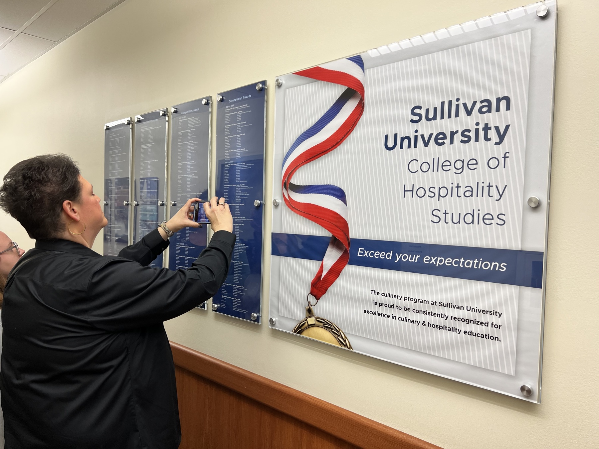

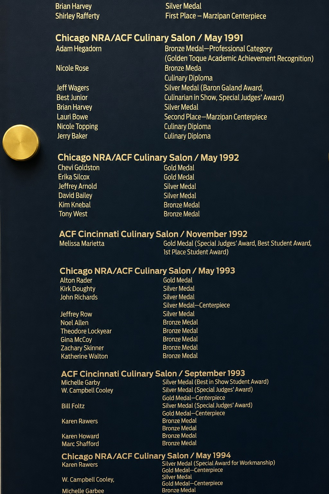
I didn't know the board existed until recently. We were at Sullivan University for my daughter Georgia's college visit when we found the Competition Awards wall. My name was there: 1992, Silver Medal, exactly where it had always been. Janette photographed it. There's something fitting about that. The work was real enough to be permanently recorded without me ever needing to keep track of it.
The Client Process
Every new wedding cake client began with a face-to-face meeting. I asked them to bring magazine clippings, fabric swatches, anything that captured their vision. Most clients had never done this before. I had done it hundreds of times, so I guided them through decisions they didn't know they needed to make. Here's what that process looked like, and what it maps to.
| Step | What I Did | UX Equivalent |
|---|---|---|
| 01 | Scheduled a face-to-face meeting before any design decisions were made. No sketches. No assumptions. Just a conversation. | Stakeholder interview. Establishing shared context before committing to a direction. Understanding the human behind the project, not just the ask. |
| 02 | Asked clients to bring magazine clippings and fabric swatches: physical artifacts that represented their vision before they could find words for it. | Contextual inquiry & artifact elicitation. A swatch communicates color, texture, and emotional tone at once, and often reveals what the client values but can't yet articulate. |
| 03 | Asked about guest count, date, time of day, food service style, cake and icing flavors, the exact shade of the dress, and whether to save the topper or make a fresh replica for their first anniversary. | Requirements gathering. Exploring constraints, dependencies, and success criteria, including details the client didn't know would matter. The anniversary topper question changed the structural design. |
| 04 | Guided them through decisions they didn't know they needed to make, blending their inspirations with my expertise until we created something unique to them. | Co-design & facilitated ideation. The designer's job isn't to have all the ideas. It's to create the conditions where the right ones emerge. My expertise structured the process; their vision defined the outcome. |
| 05 | Took a couple of days after the meeting to process everything before producing any output. The meeting was data collection. What came next was different work. | Synthesis. The clippings, swatches, and answers were fragments on their own. Synthesis turned them into a design brief I could build from. |
| 06 | Produced a detailed sketch of layout, tier proportions, florals, decorative elements, and color relationships. Specific enough to communicate intent, open enough to invite final approval. | Wireframe & design specification. The sketch was a deliverable, not a draft. It gave the client something concrete to respond to and gave me a documented plan to build from. |
| 07 | Delivered a signed invoice that itemized every element before a single cake was baked. Both parties signed. Both knew exactly what was being built. | Design contract & scope management. A signed invoice is a scope document. It protects both parties and prevents creep. I learned this in buttercream before I had a name for it in Figma. |
When It Got Hard
Design is tested when things go wrong. One of these moments was planned for. One wasn't. Both taught me more about process than any smooth delivery ever did.
The three-cake delivery day
I had three wedding cakes scheduled for delivery on the same day. Different venues. Different timelines. One team. The logistics alone were a design problem.
Before the day started, I created a detailed delivery checklist covering venue contacts, routes, setup sequences, and handling instructions for each cake. Then I trained my team explicitly, walking through every step so there were no assumptions and no gaps.
We ran a mock delivery. Not a briefing: an actual walkthrough that surfaced the questions nobody had thought to ask. What happens at the freight elevator? Who stabilizes the base while the tiers are assembled? Where do the florals go last, and who places them?
On the day itself, I dispatched two deliveries with my team while I stayed back, finished the last and largest cake, and delivered it myself. Every cake, every venue, on time.
The mock delivery is what made it work. We found the failure points before they were failures.
The client pickup recovery
A client insisted on transporting the cake themselves. I advised against it. A tiered wedding cake is a precision-stacked structural system, not a passenger. But the decision was theirs. I documented the handling instructions and sent them off.
The cake didn't survive the journey.
They called me from the event space. I loaded my tools, drove to the venue, and performed an on-site repair that saved the event: structural rebuilding, fresh piping, presentation restored. Done before the guests arrived.
That cake ended up being one of my favorites. Not because it went perfectly, but because the final result was better than I'd expected under those conditions. Constraints have a way of making you work differently.
The lesson was about being the kind of designer who shows up when the product breaks in the field, with tools, composure, and no interest in placing blame.
The Work
Each cake began with a conversation. This is what became of them. More pieces, including watercolors, are in Creative Work.

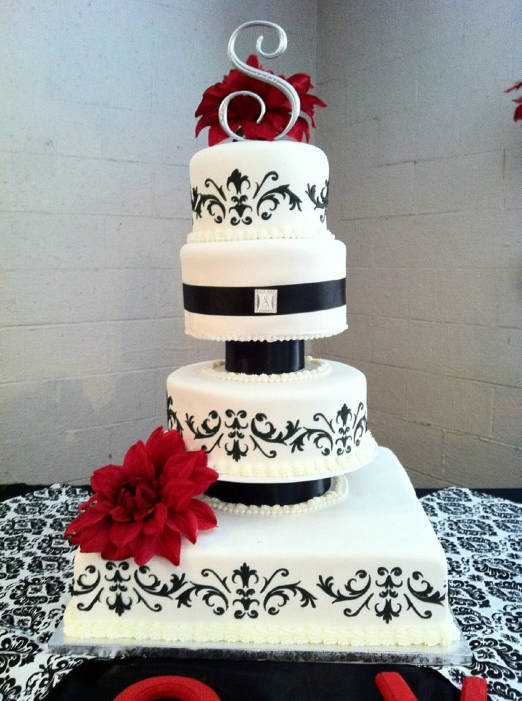

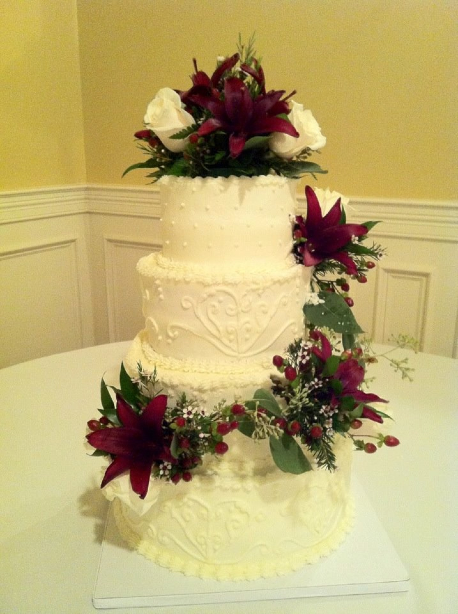

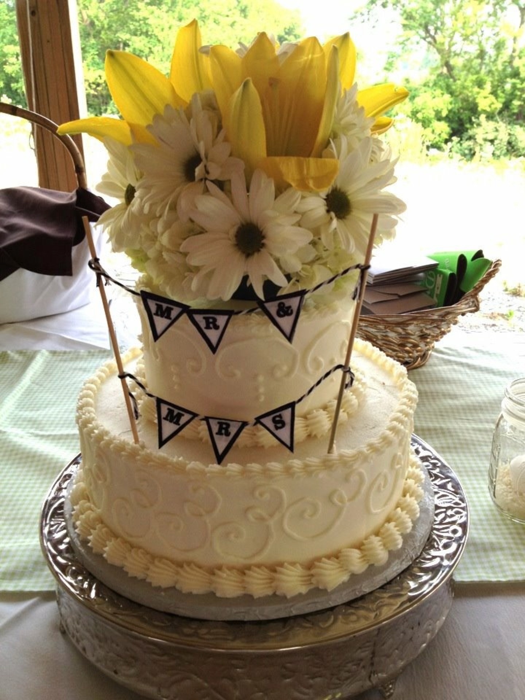

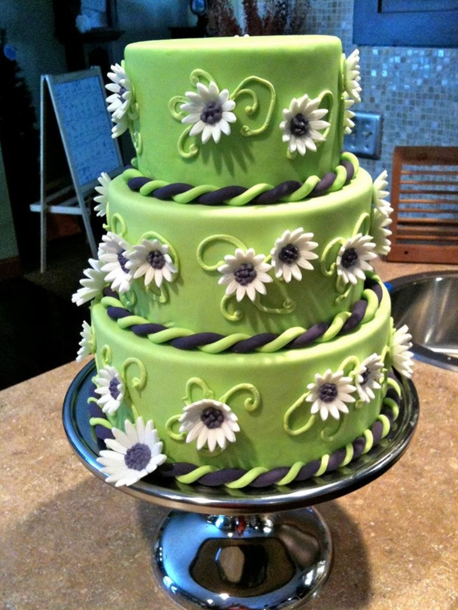

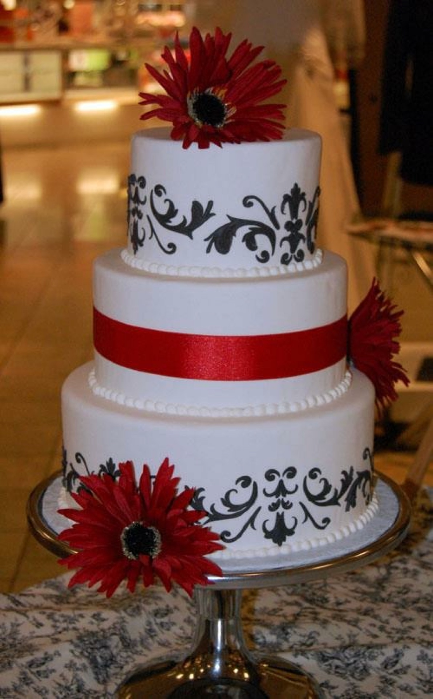

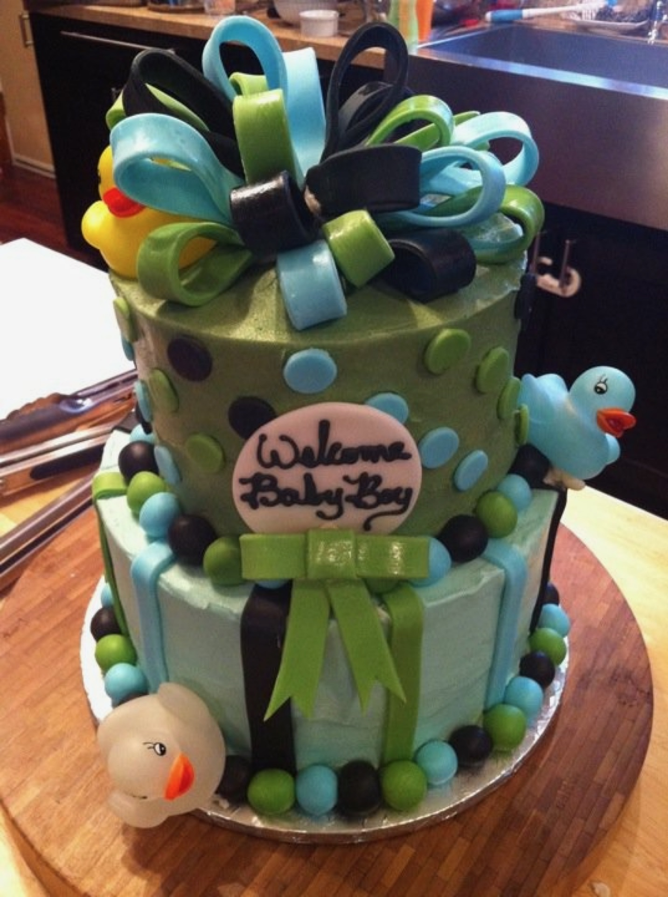

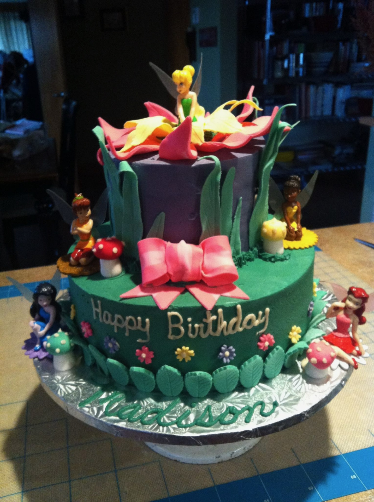
Want to see more cakes? Head over to The Pastry Kitchen's website to see what else I've made.
Visit thepastrykitchen.net (opens in a new tab)The Through Line
The tools changed. The process never did.
- Understand what someone needs.Every client meeting. Every clipping and swatch. Every question about the dress shade and the anniversary topper. That wasn't customer service. It was research: structured, intentional, and done before a single decision was made.
- Design something that serves that need.The sketch wasn't decoration. It was a specification. It earned a signature because both parties needed to know exactly what was being built before anyone picked up a pastry bag. Or opened Figma.
- Deliver it with care.Whether the medium is buttercream or a design file, delivery is part of the work. The mock run. The checklist. Showing up at the venue with tools when something breaks. That discipline doesn't change with the platform.
The Pastry Kitchen wasn't a detour from UX design. It was the beginning of it.
The vocabulary came later. The practice was already there.